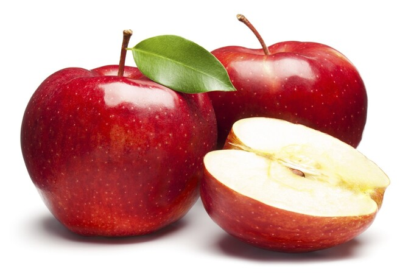

Fruits

Strawberry
RM14.90/250g

Apple
RM7.90/kg
Orange
RM7.90/kg
Often enjoyed fresh and can be eaten on their own or used as a delicious addition to desserts, salads, smoothies, and more. With their irresistible taste and attractive appearance, strawberries are a popular choice for both snacking and culinary creations.
Widely used in cooking and baking, as well as enjoyed fresh. Apples can be sliced, diced, or turned into sauces, pies, cakes, and other delightful treats. They are also packed with essential nutrients and make for a healthy snack option.
Can be eaten fresh, peeled and segmented, or juiced to enjoy their delicious taste. Oranges are a popular ingredient in both sweet and savory dishes, as well as in beverages like orange juice. They bring a zesty and citrusy touch to salads, desserts, marinades, and more.